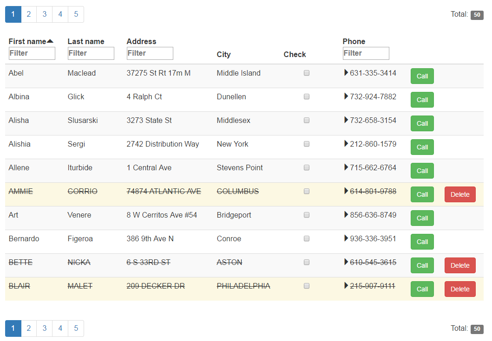

PagedList’s documentation¶
PagedList is a javascript library to create html lists (or tables) with pagination and auto rendering features. Columns and buttons can be configured.
Columns are configurable to enable sorting and filtering. Buttons are default shown for each row, but can be configured to be visible dependent on row data. Callback functions can be applied on buttons. The row data will be passed to the callback function when a button is clicked.
The list gets refreshed automatically when the user changes sorting or filtering (or browse to an other page). Refreshing can also be done manually by calling myList.refresh()
Columns can be configured to expand and collapse, which inserts and deletes an html-element below the clicked row. See onExpandItem
Go to Installation and Code examples for a quick start.
How does it look¶
Styling can by fully customized. Default styling looks like:
Installation¶
Add dependencies to your html file:
- jQuery (https://jquery.com/)
- Bootstrap (http://getbootstrap.com/)
Add pagedList.min.js or pagedList.js to your html file, like:
<script src="pagedList.min.js"></script>
Code examples¶
Add a new list to an existing html element with id=myListId, using PagedList:
var myList = new pagedList.PagedList(
"#myListId", "http://myURL/getListItems");
Add a column with sorting and filtering capabilities, using addColumn:
var column_one = myList.addColumn("Name", "Name")
.enableFilter()
.enableSort();
Define how the column content will be rendered, based on the row data, using itemToHtml (alternatively use itemToElement):
column_one.itemToHtml(function (item) {
return "<div>" + item.Name + "</div>";
});
Add a button to the list, including style classes, which will be visible dependent on row data, using addButton:
myList.addButton("Edit", "Edit", "btn btn-primary btn-xs")
.onclick(function (item) {
console.log("Todo: edit item");
}).showIf(function (item) {
return item.CanEdit == true;
});
For more examples, download the standalone example page, which shows a PagedList with data from a fake server.
Globals¶
-
pagedList.addDefaultButton(id, name, styleClass)¶ Configure a global button to the pagedList module. See also
addDefaultButtonsParameters: - id – self chosen id for the default button to be created. Must be unique. Example: “Select”.
- name – text to show on the button. Example: “Select now!”
- styleClass – html style class to be added to the button. Example:
btn btn-primary btn-xs
Returns: PagedListButton
After adding default buttons, any instance of PagedList can add these buttons by specifying the id’s, like:
myList.addDefaultButtons(["Select"])
-
pagedList.DefaultText= {'TextTotal': 'Total', 'TextFilter': 'Filter'}¶ - Default text to show. Can for example be changed like
pagedList.DefaultText.TextTotal = 'Totale!';
PagedList¶
-
class
pagedList.PagedList¶ Parameters: - container – container element to place this list in. It can be an html-element or an selector (str)
- url – (optional) url which will be used by this list to get new data. A
AjaxServerwill be created. If an empty string or null is given, aFakeServerwill be created.
- On refresh the list sends a POST request with data like:
{ page: 1, pageSize: 20, filterColumns: [], filterValues: [], sortOn: '', sortAsc: true }- It expects to get a response with data like:
{ Items: [], CurrentPage: 1, PageCount: 5, TotalCount: 95 }
-
addButton(id, name, styleClass)¶ Add a button to this list. The button will possibly be placed in each row.
Parameters: - id – self chosen id for the button to be created. Example: “Select”.
- name – text to show on the button. Example: “Select now!”
- styleClass – html style class to be added to the button. Example:
btn btn-primary btn-xs
Returns:
-
addColumn(id, header=<built-in function id>)¶ Add a column to this list
Parameters: - id – self chosen id for the column to be created.
- header – text to show in the header. If not specified, id will be used.
Returns:
-
addDefaultButtons(*ids)¶ Add pre-configured default buttons to this
PagedList. See alsoaddDefaultButton.Parameters: ids – list of all id’s, as specified during configuration of the default buttons. Default buttons can be called by
myList.idormyList['id']whereidis the id of the default-buttons.
-
addRowListener(event, func)¶ Attach an event to the body of the table. When the event gets triggered, the row is found which contains the event target. If any row is found, the function gets executed.
Parameters: - event – event, for example:
"dblclick" - func – function which accepts an item (data of one row) and (optional) an event.
Returns: function which is added as EventListener. Use this for
removeRowListenerIf this list contains buttons, be aware to take care of the event propagation. For example do something like this:
myList.addButton(...).onclick( function(item, evt){ // do something you want with item evt.stopPropagation(); });- event – event, for example:
-
ajaxServer(url)¶ Creates a
AjaxServerand uses that for this list.Param: url: url which will be used by this list to get new data Returns: AjaxServer
-
fakeServer()¶ Creates a
FakeServerand uses that for this list.Returns: FakeServer
-
getData(page, fullPage=False)¶ Make a POST request to get new data from server and refresh the list.
Parameters: - page – page-nr to get
- fullPage – if false (default) all values will be updated, if true, all rows in the list will be re-rendered, and expanded rows will be removed.
-
getServer()¶ Returns the current used a
DataServer. See alsofakeServerandajaxServerReturns: DataServer
-
getStyling()¶ Returns the
PagedListStylingobject belonging to thisPagedList.
-
getUrl()¶ Returns the url for the current used
DataServer. This is only defined if it is aAjaxServer
-
mergeButtonColumns= False¶ Default false. If true, all buttons will be placed in one column, instead of creating one column for each button. This can only be changed before the first refresh, thus after creation of the list.
-
onPageRefreshed(func=None)¶ Place a callback function to be called after the list is refreshed.
Returns: this PagedList
-
pageSize= 20¶ Default page size (nr of rows). Can be changed any time calling (e.g.)
myList.pageSize = 10
-
refresh(fullPage=False)¶ Refresh this list. This will cause the list to get the data for the current page, and update all values.
Parameters: fullPage – if false (default) all values will be updated, if true, all rows in the list will be re-rendered, and expanded rows will be removed.
-
removeRowListener(event, func)¶ Remove an event from the body of the table.
Parameters: - event – event, for example:
"dblclick" - func – function which is returned from
addRowListener
- event – event, for example:
-
setUrl(url)¶ Sets the url for the current used
DataServer. This only makes sence if it is aAjaxServerParameters: url – url which will be used by this list to get new data. Returns: this PagedList
PagedListStyling¶
-
class
pagedList.PagedListStyling¶ Object which is automatically created by
PagedListand used for styling. Use the object by callingmyList.getStyling()-
rowClasses(func)¶ Specify the html style classes for each row. Calling this function multiple times will append all classes. To clear all previously added classes, call
myList.rowClasses(null);Parameters: func – function which accepts an item (data of 1 row) and returns a string with style classes Returns: this PagedListStyling
-
rowStyles(func)¶ Specify the html styles for each row. Calling this function multiple times will append all styles. To clear all previously added styles, call
myList.rowStyles(null);Parameters: func – function which accepts an item (data of 1 row) and returns a string with styles Returns: this PagedListStyling
-
setClassAscending(styleClass)¶ Specify the html style class for the span in the column header when the column is sorted in <b>ascending</b> order. This will override the default value:
glyphicon glyphicon-triangle-topParameters: styleClass – a string with style classes Returns: this PagedListStyling
-
setClassButtonColumn(styleClass)¶ Specify the html style class for the button column(s), This will override the default value:
pagedList-buttonColumnParameters: styleClass – a string with style classes Returns: this PagedListStyling
-
setClassCollapsed(styleClass)¶ Specify the html style class for the span in a column row when the row is collapsed. This will override the default value:
cursor glyphicon glyphicon-triangle-rightParameters: styleClass – a string with style classes Returns: this PagedListStyling
-
setClassDescending(styleClass)¶ Specify the html style class for the span in the column header when the column is sorted in <b>descending</b> order. This will override the default value:
glyphicon glyphicon-triangle-bottomParameters: styleClass – a string with style classes Returns: this PagedListStyling
-
setClassExpanded(styleClass)¶ Specify the html style class for the span in a column row when the row is expanded. This will override the default value:
cursor glyphicon glyphicon-triangle-bottomParameters: styleClass – a string with style classes Returns: this PagedListStyling
-
tableClass(styleClass)¶ Specify the html style class for the table, to override the default value:
table table-striped table-hoverParameters: styleClass – a string with style classes Returns: this PagedListStyling
-
tableStyle(style)¶ Specify the html style for the table
Parameters: style – a string with the style Returns: this PagedListStyling
-
PagedListColumn¶
-
class
pagedList.PagedListColumn¶ -
addClass(styleClass)¶ Add a style-class to the header and to the rows. This is the same as calling
addClassHeaderandaddClassRowssubsequently.Parameters: style – html style class Returns: this PagedListColumn
-
addClassHeader(styleClass)¶ Add a style-class to the header. Default class which is always added:
pagedListColumnHeaderParameters: styleClass – html style class Returns: this PagedListColumn
-
addClassHeaderSpan(styleClass)¶ Add a style-class to the span in the header.
Parameters: styleClass – html style class Returns: this PagedListColumn
-
addClassRows(styleClass)¶ Add a style-class to the rows (all rows, item independent). Default class which is always added:
pagedListColumnRowParameters: styleClass – html style class Returns: this PagedListColumn
-
addStyle(style)¶ Add a style to the header and to the rows. This is the same as calling
addStyleHeaderandaddStyleRowssubsequently.Parameters: style – html style Returns: this PagedListColumn
-
addStyleHeader(style)¶ Add a style to the header.
Parameters: style – html style Returns: this PagedListColumn
-
addStyleHeaderSpan(style)¶ Add a style to the span in the header.
Parameters: style – html style Returns: this PagedListColumn
-
addStyleRows(style)¶ Add a style to the rows (all rows, item independent).
Parameters: style – html style Returns: this PagedListColumn
-
enableFilter(items=None)¶ Enable filtering for this column. This will show a html input textfield or a html select in the header of the column.
Parameters: items – optional, a list of filter-items to filter on. Example with 2 filter-items: [{Text: 'Apples', Value: 1}, {Text: 'Oranges', Value: 2}]Returns: this PagedListColumn
-
enableSort()¶ Enable sorting for this column. This will give possibility to click on the header, to toggle ascending and descending ordering.
Returns: this PagedListColumn
-
itemToElement(itemToElementFunction)¶ Define how the column content will be rendered, based on the row data.
Parameters: itemToElementFunction – function which accepts an item (data of a row) and returns a html element Returns: this PagedListColumnNote: this function will only be re-rendered if
fullPage=true, see alsorefreshandgetData.
-
itemToHtml(itemToHtmlFunction)¶ Define how the column content will be rendered, based on the row data.
Parameters: itemToHtmlFunction – function which accepts an item (data of a row) and returns a html string Returns: this PagedListColumn
-
onExpandItem(func)¶ Make this column expandable. A clickable arrow will be added to each row. On clicking an html-element will be inserted or removed below the clicked row.
Parameters: func – function which accepts an item (data of a row) and returns a html element. The element will be placed inside the second column of a new generated table. Styling can be done by the style classes subPagedListTd,subPagedListTable,subPagedListCell1andsubPagedListCell2.Returns: this PagedListColumn
-
PagedListButton¶
-
class
pagedList.PagedListButton¶ Button to show for each row in a
PagedList. Buttons are created by callingaddButtonon aPagedListinstance.-
onclick(func)¶ Add an callback function to this button to be called when button is clicked.
Parameters: func – function which accepts a item (data for one row) Returns: this PagedListButton
-
showIf(func)¶ Add an function to this button to determine if this button is shown for a specific row.
Parameters: func – function which accepts a item (data for one row) and returns true/false Returns: this PagedListButton
-
Pager¶
-
class
pagedList.Pager¶ A Pager shows clickable page numbers and the total count of items, and can be shown at top and bottom of a
PagedListThe html element structure gets generated like:
<div> <table width="100%"> <tbody> <tr> <td> <ul class="pagination"> <li class="active"> <a href="#">1</a> </li> <li> <a href="#">2</a></li> <li> <a href="#">3</a></li> <li> <a href="#">4</a></li> <li> <a href="#">5</a> </li> </ul> </td> <td align="right"> Total: <span class="label label-default">10</span> </td> </tr> </tbody> </table> </div>
The styling is defined by the following classes:
paginationon theulelement, for the page numbers.activeon thelielement , for the active page number.label label-defaulton thespanelement for the count number.
-
getElement()¶ Returns the html element of this Pager object, which is a
divelement.
-
getTable()¶ Returns the html
tableelement of this Pager. Can for example be used to override the default styleheight: 80px;:myList.getTopPager().getTable().style = "height: 150px";
-
setActiveClass(styleClass)¶ Replace the default class
activein the html structure of thisPager.Returns: this Pager
DataServer¶
-
class
pagedList.DataServer¶ Base class for objects who deliver data to
PagedList. Instantiation is done automatically by creating a PagedList, or manually by invokingmyList.fakeServer()andmyList.ajaxServer(url)Any DataServer must take care of filtering, sorting and paging, as requested by the PagedList.
AjaxServer¶
-
class
pagedList.AjaxServer¶ Object which creates Ajax calls to the server and passes this data to the PagedList.
FakeServer¶
-
class
pagedList.FakeServer¶ Object to hold the data used by
PagedList. This objects takes care of filtering, sorting and paging, doing this all on client side.-
addData(*items)¶ Add data to this server. If sorting or filtering is enabled, field names of data-items must correspond with column id.
-
deleteItem(id)¶ Remove an item from data
-
getItem(id)¶ Get an item (row) of data with the given id
-
getMaxId()¶ Returns maximum id of the data items in this server.
-